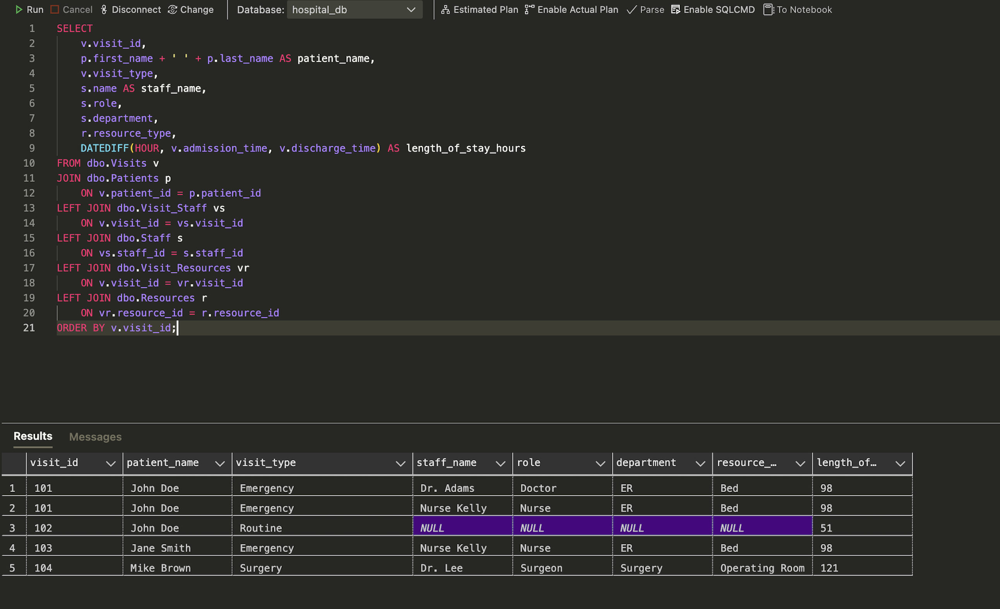
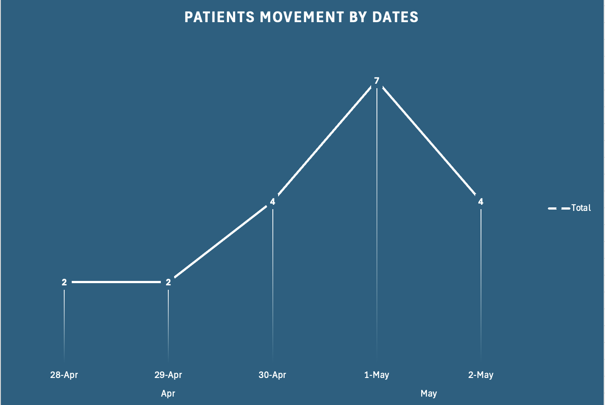
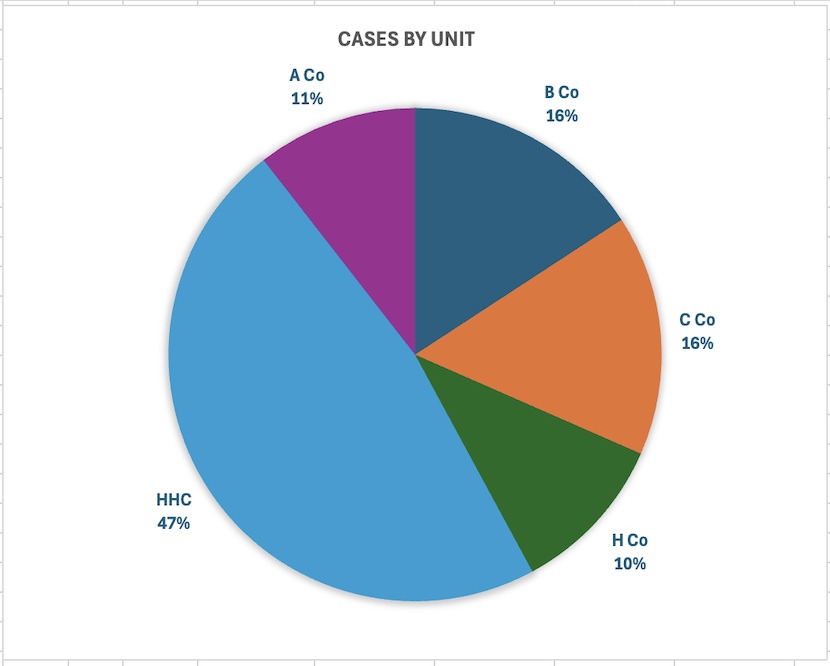
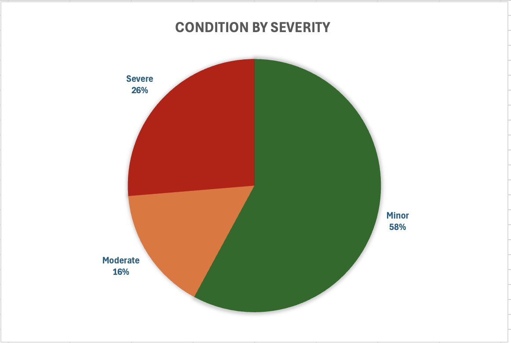
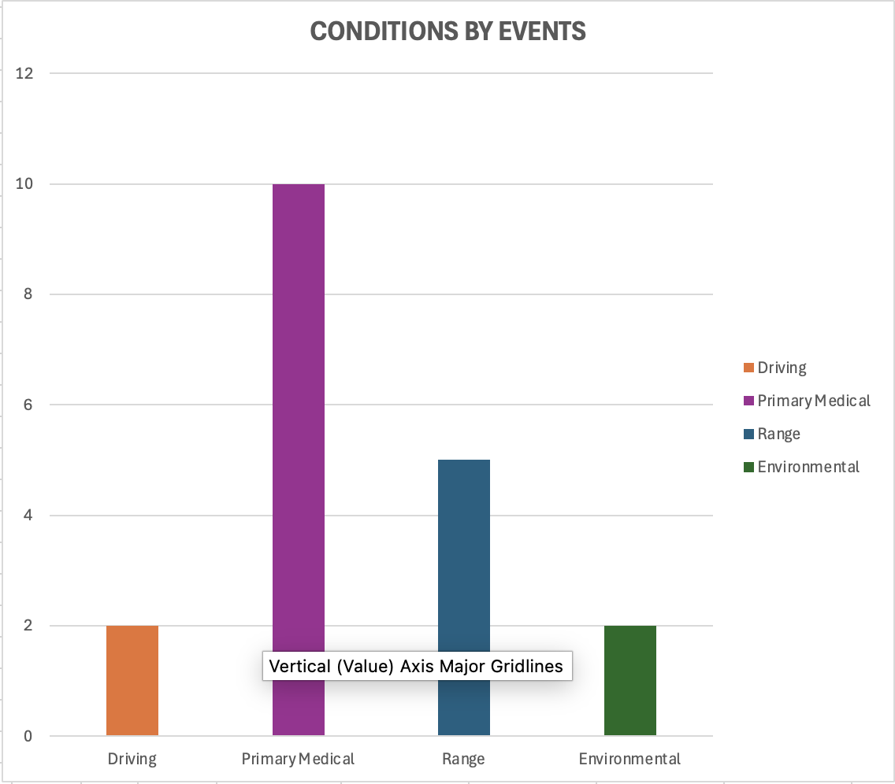

Patient Flow & Capacity Dashboard
Monitors patient volume, LOS, and capacity to optimize throughput and reduce delays.
View Project →Health IT, Clinical Informatics, Healthcare Analytics, and Project Management portfolio focused on practical dashboards, SQL systems, operational reporting, and leadership-ready insights.
I build practical Health IT and healthcare analytics solutions that transform operational data into clearer workflows, stronger decision-making, and measurable leadership value.
Health IT, Project Management & Operational Analytics
Real-world Health IT and operational analytics solutions with measurable impact.

Monitors patient volume, LOS, and capacity to optimize throughput and reduce delays.
View Project →
Tracks medical cases, severity, unit trends, outcomes, and leadership-ready readiness reporting.
View Project →Forecasts hydration requirements for personnel planning, logistics readiness, and field operations.
Use Tool →This portfolio sits at the intersection of healthcare operations, clinical systems, data analytics, information systems, military healthcare leadership, and project execution.
I am a Health IT professional with experience in health informatics, project management, clinical systems, healthcare analytics, and military healthcare leadership. My work focuses on using structured data, dashboards, databases, and workflow analysis to solve practical operational problems.
The projects below are presented as case studies. Each one explains the problem, why it mattered, the solution, workflow, measurable outcomes, and leadership or business impact.
The goal is simple: show that I can connect technical execution to operational value in healthcare and mission-support environments.
A focused blend of healthcare technology, analytics, operational reporting, and project execution capabilities.
Healthcare operations, analytics dashboards, and data-driven solutions designed for real-world impact.
Designed and implemented a healthcare database analytics system focused on patient flow optimization, length of stay, staff workload, resource utilization, and hospital operations reporting.
Hospitals often struggle with fragmented patient flow data, making it harder to evaluate length of stay, staff workload, resource usage, and visit patterns.
Built a relational database analytics workflow that organizes patient, visit, staff, and resource data into a structured reporting model.
Supports staffing decisions, throughput monitoring, workflow improvement, and executive reporting through structured operational metrics.
Explore simulated hospital patient flow metrics by visit type and department. The dashboard updates length of stay, wait time, discharge rate, and visit distribution in real time.
The patient flow metrics shown above are based on simulated healthcare operational data created for portfolio demonstration purposes. This dashboard demonstrates patient flow monitoring, KPI tracking, and healthcare operations reporting concepts used in Health IT environments.
Developed an operational patient movement tracking dashboard to improve visibility of medical readiness, patient status, severity, outcomes, and movement trends.
Patient movement and medical tracking can become difficult when information is spread across manual logs, inconsistent formats, or disconnected summaries.
Organized case-level operational data into a dashboard workflow with unit, severity, event type, outcome, and movement trend views.
Improves visibility for patient counts, case trends, severity levels, outcomes, and unit-level medical activity while remaining privacy-aware.

Cases by unit

Condition severity distribution

Conditions by event type
Patient movement trends
Explore simulated patient movement trends by unit, severity level, event type, and outcome category.
The patient movement data displayed above is simulated for educational and portfolio purposes. This dashboard demonstrates operational readiness tracking, case monitoring, and healthcare logistics analytics workflows.
Built an interactive operational water consumption dashboard to support logistics planning, hydration readiness assessments, and resource forecasting for large-scale personnel operations.
Field operations require accurate water planning, but estimates can become inconsistent when based on rough calculations or informal notes.
Built consumption assumptions by weather category and calculated liters and gallons required for planning scenarios.
Supports soldier safety, logistics, sustainment, readiness, and command-level decision-making during field operations.
Estimate total water requirements by adjusting the number of soldiers, mission duration, and environmental condition.
Conducted strategic IT governance and organizational analysis focused on operational alignment, technology oversight, risk management, and enterprise decision-making frameworks.
Healthcare organizations need IT initiatives that align with governance, compliance, risk management, stakeholder needs, and measurable business value.
Analyzed governance and IT alignment concepts, connected information systems to business value, and evaluated risk and stakeholder considerations.
Shows strategic thinking beyond technical execution by connecting technology decisions to governance, risk, stakeholders, and organizational value.
More than completed projects: this portfolio shows how I define problems, build solutions, communicate outcomes, and connect technical work to leadership value.
Healthcare data, clinical systems, operational reporting, workflow improvement, and information system design.
Each project explains the problem, why it mattered, the solution, workflow, outcomes, and leadership impact.
SQL, database design, dashboards, analytics, documentation, GitHub, and portfolio deployment.
Connects technical work to decision-making, planning, process improvement, reporting, and stakeholder communication.
I welcome opportunities to collaborate, network, and contribute to healthcare and information systems initiatives.
I am open to Health IT, Clinical Informatics, Healthcare Analytics, and Project Management opportunities where I can apply technical, operational, and leadership experience to improve healthcare workflows.